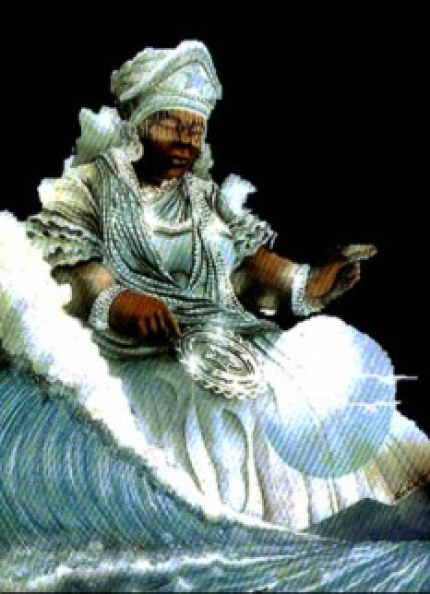

Jonville,Quarta-feira, 27 de Fevereiro de 2013


Yemanja
Olodumare fez o mundo e repartiu entre os orisás vários poderes, dando a cada um reino para cuidar. A Esú deu o poder da comunicação e a posse das encruzilhadas. A Ogum o poder de forjar os utensílios para agricultura e o domínio de todos os caminhos. A Osóssi o poder sobre a caça e a fartura. A Obaluaê o poder de controlar as doenças de pele. Osunarê seria o arco-íris, embelezaria a terra e comandaria a chuva, trazendo sorte aos agricultores. Sango recebeu o poder da justiça e sobre os trovões. Oiá reinaria sobre os mortos e teria poder sobre os raios. Euá controlaria a subida dos mortos para o orun, bem como reinaria sobre os cemitérios. Osun seria a divindade da beleza, da fertilidade das mulheres e de todas as riquezas materiais da terra, bem como teria o poder de reinar sobre os sentimentos de amor e ódio. Nanã recebeu a dádiva, por sua idade avançada, de ser a pura sabedoria dos mais velhos, além de ser o final de todos os mortais; nas profundezas de sua terra, os corpos dos mortos seriam recebidos. Além disso do seu reino sairia a lama da qual Osalá modelaria os mortais, pois Odudua já havia criado o mundo. Todo o processo de criação terminou com o poder de Osogyian que inventou a cultura material. Para Yemonjá, Olodumare destinou os cuidados da casa de Osalá, assim como a criação dos filhos e de todos os afazeres domésticos. Yemonjá trabalhava e reclamava de sua condição de menos favorecida, afinal, todos os outros deuses recebiam oferendas e homenagens e ela, vivia como escrava. Durante muito tempo Yemonjá reclamou dessa condição e tanto falou, nos ouvidos de Osalá, que este enlouqueceu. O ori (cabeça) de Osalá não suportou os reclamos de Yemonjá. Osalá ficou enfermo, Yemonjá deu-se conta do mal que fizera ao marido e, em poucos dias, utilizando-se de ori (banha vegetal), de omi-tutu (água fresca), de obi (fruta conhecida como nóz-de-cola), eyelé-funfun (pombos brancos) e esò (frutas) deliciosas e doces, curou Osalá. Osalá agradecido foi a Olodumare pedir para que deixasse a Iemanjá o poder de cuidar de todas as cabeças. Desde então Iemanjá recebe oferendas e é homenageada quando se faz o bori (ritual propiciatório à cabeça) e demais ritos à cabeça. Yemonjá seria a filha de Olokum, deus (em Benin e em Lagos) ou deusa (em Ifé) do mar. Foi casada pela primeira vez com Orunmyila, senhor d as adivinhações, depois com Olofin-Oduduá, Rei de Ifé, com quem teve dez filhos, que se tornaram Orisás. De tanto amamentar seus filhos, seus seios ficaram enormes.
Esta foi a origem dos desentendimentos com o marido. Embora ela já o houvesse prevenido, dizendo-lhe que jamais toleraria que ele ridicularizasse os seus seios, uma noite o marido, que havia se embriagado com vinho de palma, não mais podendo controlar suas palavras, fez comentários sobre seus seios voluminosos. Tomada de cólera, Yemonjá fugiu em direção ao oeste, o "escurecer da terra". Olokun lhe havia dado outrora, por medida de precaução, uma garrafa contendo um preparado, pois "não-se-sabe-jamais-o-que-pode-acontecer-amanhã". E assim Yemonjá foi instalar-se à oeste de Abeokutá, alusão à migração dos Egbás. Olofin-Oduduá lançou seu exército à procura de Yemonjá. Esta, cercada, em vez de se deixar prender e ser conduzida de volta a Ifé, quebrou a garrafa, segundo as instruções recebidas. Um rio criou-se na mesma hora, levando-a para Okun, o mar, lugar de residência de Olokun.
Esta foi a origem dos desentendimentos com o marido. Embora ela já o houvesse prevenido, dizendo-lhe que jamais toleraria que ele ridicularizasse os seus seios, uma noite o marido, que havia se embriagado com vinho de palma, não mais podendo controlar suas palavras, fez comentários sobre seus seios voluminosos. Tomada de cólera, Yemonjá fugiu em direção ao oeste, o "escurecer da terra". Olokun lhe havia dado outrora, por medida de precaução, uma garrafa contendo um preparado, pois "não-se-sabe-jamais-o-que-pode-acontecer-amanhã". E assim Yemonjá foi instalar-se à oeste de Abeokutá, alusão à migração dos Egbás. Olofin-Oduduá lançou seu exército à procura de Yemonjá. Esta, cercada, em vez de se deixar prender e ser conduzida de volta a Ifé, quebrou a garrafa, segundo as instruções recebidas. Um rio criou-se na mesma hora, levando-a para Okun, o mar, lugar de residência de Olokun.
Notícias...
----------------------------------
Copyright © 2011- Todos direitos reservados à ACCAIA
Rua Arildo Jose da Silva,99 - Itinga Joinville - SC - Cep: 89245000
::: Suporte 04791261971 :::